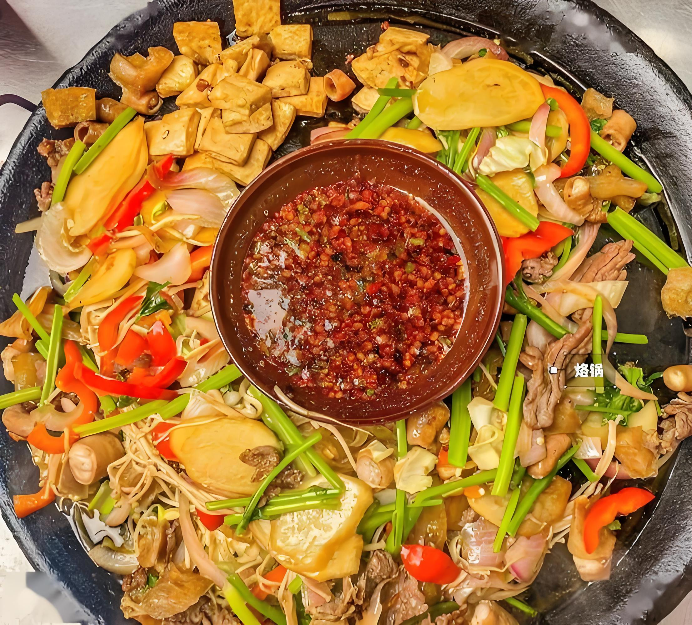
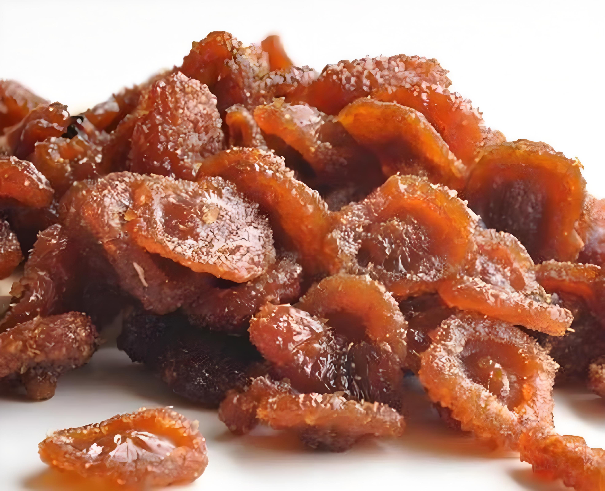

中国凉都・康养胜地
自然景观
高原草场
乌蒙大草原
西南地区海拔最高、面积最大的高原草场之一，每年夏季盛开壮观的杜鹃花海
高原草场
杜鹃花海
佛光奇观
最佳游览时间：6-9月
盘州市四格乡
乌蒙大草原
基本概况
- 位置：六盘水市盘州市（盘县）北部，乌蒙镇与坪地乡交界处
- 海拔：2000–2857 米（贵州第二高峰牛棚梁子就在这里）
- 等级：国家 4A 级景区
- 门票：约 30 元 / 人
- 开放时间：全天开放
核心自然景观
- 10 万亩高山草场：贵州少有的辽阔草原，蓝天白云、牛羊成群，"风吹草低见牛羊" 的高原风光
- 天池（长海子）：高原淡水湖，湖水清澈，被称为 "草原之眼"，适合环湖、拍照、露营
- 4 万亩高山矮杜鹃：每年4–5 月盛开，粉紫色花海铺满草原，与绿草、蓝天、风车同框，非常梦幻
- 云海佛光（奇景）：雨后清晨常见云海翻涌；运气好能看到佛光（人影被七彩光环包围），是乌蒙一绝
- 白色风车群：巨型风力发电机沿山脊排列，草原 + 风车 + 云海，出片率极高
人文与彝族风情
- 彝族村寨：周边是彝族聚居区，保留传统民居、服饰、语言
- 彝家美食：羊肉汤锅、烤土豆、荞麦饼
- 民俗：芦笙舞、山歌、刺绣、蜡染
- 火把节（农历六月二十四）：彝族最盛大节日：篝火晚会、斗牛、斗羊、歌舞、火把巡游，非常热闹
- 古夜郎与历史遗迹：属古夜郎国疆域，有吴王扎营山、管家老岩等历史传说与遗迹
最佳游玩时间
- 4–5 月：看杜鹃花海
- 6–8 月：避暑（均温约 11–19℃）、看草原、观云海
- 冬季（12–2 月）：乌蒙滑雪场（西南最大高原滑雪场）
交通与住宿
- 交通：从盘州市区乘坐旅游专线车可达
- 住宿：草原内有帐篷酒店和蒙古包可供选择
高原索道
梅花山
六盘水市标志性景点，拥有世界最长同路径山地索道，四季景色各异
山地索道
四季景色
云海奇观
建议游览时间：半天-1天
钟山区梅花山
梅花山
基本信息
- 位置：六盘水市钟山区西郊（距市区仅 5 公里）
- 海拔：最高约2800 米，贵州第二高峰附近
- 称号：中国凉都・六盘水地标、国家 4A 级景区
- 门票：景区免费，索道、游乐项目单独收费
- 开放时间：9:00-17:00
核心亮点（必玩）
- 世界最长同路径山地索道（9.91 公里）：单程约45–50 分钟，穿越城市、峡谷、森林、云海；俯瞰峰林、雾海、风车、山城全景，天气好时绝美；票价：往返约118 元，单程 78 元；终点有旋转餐厅、星空屋、网红打卡点
- 梅花坪景区（网红打卡核心）：360° 旋转餐厅（海拔 2560m）：边吃火锅 / 西餐边看全景；球形星空屋、童话树屋：拍照出片率极高；梅花造型建筑、云端栈道、日落 / 夜景台
- 梅花山国际滑雪场（冬季限定）：西南最大高原滑雪场之一；冬季（12–2 月）开放，滑雪、玩雪圈、雪地拍照；票价约120 元起 / 小时
- 梦幻激情谷（游乐项目）：玻璃鹊桥（玻璃吊桥）、彩虹滑道、精灵乐园；适合年轻人、亲子游玩
人文与民族风情
- 回民风情园：体验回族文化、清真美食
- 周边彝族、苗族村寨：民俗浓郁
- 凉都森林公园：徒步、吸氧、避暑
最佳游玩时间
- 夏季（6–8 月）：避暑（均温约 17–20℃）、看云海、日落
- 冬季（12–2 月）：滑雪 + 雾凇雪景
- 春秋：赏花、徒步、看风车、拍全景
- 夜景：俯瞰六盘水全城灯火，非常震撼
交通与住宿
- 交通：从市区乘坐公交可达
- 住宿：山顶有酒店可供选择
人文风景
明清古镇
水城古镇
六盘水历史文化的见证，保存完好的明清古建筑群
明清建筑
历史文化
特色民居
建议游览时间：半天
钟山区老城
水城古镇
基本信息
- 位置：六盘水市钟山区老城
- 历史：历史悠久，是六盘水历史文化的见证
- 门票：免费
- 开放时间：全天开放
核心亮点
- 明清古建筑群：保存完好的明清时期建筑，展现了六盘水的历史风貌
- 历史遗迹：古镇内有众多历史遗迹和文化景点，如文昌阁、水星楼等
- 特色店铺：街道两旁有各种特色小吃和手工艺品店铺，琳琅满目
- 夜景：夜晚灯光璀璨，景色迷人，是拍照的好去处
- 美食：古镇内有多家特色餐馆，推荐品尝水城烙锅、羊肉粉等当地美食
游玩建议
- 最佳游览时间：下午和晚上，夜景尤为美丽
- 游览路线：从古镇入口开始，沿着主街漫步，欣赏古建筑，品尝当地美食
- 购物：可以购买当地特色手工艺品，如彝族刺绣、蜡染等
- 文化体验：可以参观当地的文化展览，了解六盘水的历史文化
交通与住宿
- 交通：从市区乘坐公交可达，也可打车前往
- 住宿：古镇内有多家客栈可供选择，也可以选择市区的酒店
千株古银杏
妥乐古银杏旅游景区
拥有1000多株古银杏树的村庄，秋季金黄满树满地
古银杏群
秋景金黄
摄影天堂
最佳游览时间：10-11月
盘州市石桥镇妥乐村
妥乐古银杏旅游景区
基本信息
- 位置：盘州市石桥镇妥乐村
- 称号："世界古银杏之乡"
- 门票：30元/人
- 开放时间：8:00-18:00
核心亮点
- 古银杏群：拥有1000多株古银杏树，树龄最长达1500年，是世界上古银杏最集中的地方之一
- 秋季景色：每年10-11月，银杏树叶金黄满树满地，景色壮观，是摄影的绝佳时机
- 村庄环境：村庄环境优美，民风淳朴，保留了传统的农村风貌
- 银杏文化：当地有丰富的银杏文化，包括银杏节等活动
- 生态环境：景区内生态环境良好，空气清新，是休闲度假的好去处
游玩建议
- 最佳游览时间：10-11月，此时银杏树叶金黄，景色最美
- 游览路线：从景区入口开始，沿着银杏林漫步，欣赏古银杏树，拍照留念
- 摄影提示：最佳拍摄时间为清晨和黄昏，光线柔和，效果最佳
- 活动体验：可以参加当地的银杏节活动，体验银杏文化
交通与住宿
- 交通：从盘州市区乘坐旅游专线车可达，也可自驾前往
- 住宿：村内有农家乐可供选择，也可以选择盘州市区的酒店
- 美食：当地特色美食有银杏炖鸡、银杏粥等，值得品尝
美食推荐

地方特色
水城烙锅
起源于明末清初的"西部名小吃"，以特制平底锅现烙食材，口感独特
推荐店铺：德坞第一家烙锅
价格范围：人均50-80元
汤鲜味美
水城羊肉粉
六盘水传统小吃，以羊肉鲜香、汤汁浓郁、米粉爽滑著称
推荐店铺：老城羊肉粉
价格范围：人均15-25元

天然健康
盘州刺梨果脯
选用六盘水盘州山区野生刺梨为原料，天然健康，营养丰富
推荐购买：盘州各特产店
价格范围：20-50元/盒
交通出行
航空交通
六盘水月照机场已开通北京、上海、广州、深圳等主要城市的航班，为游客出行提供便捷的空运服务。
主要航线：
六盘水→北京（六盘水月照机场）
六盘水→上海（六盘水月照机场）
六盘水→广州（六盘水月照机场）
铁路交通
六盘水站是贵州西部重要的铁路枢纽，安六城际铁路和株六铁路在此交汇，连接省内及全国主要城市。
主要线路：
六盘水→贵阳（安六城际铁路）
六盘水→昆明（沪昆高铁）
六盘水→广州（贵广高铁）
公路交通
六盘水市交通便利，沪昆高速、六六高速、水盘高速等多条高速公路贯穿全境，自驾游出行非常便利。
主要高速：
六盘水→贵阳（沪昆高速）
六盘水→昆明（沪昆高速）
六盘水→安顺（六六高速）
市内交通
六盘水市内交通便利，有公交、出租车、网约车等多种出行方式。主要景区之间有专门的旅游巴士线路，方便游客游览。
主要线路：
市区→乌蒙大草原
市区→玉舍国家森林公园
市区→明湖国家湿地公园